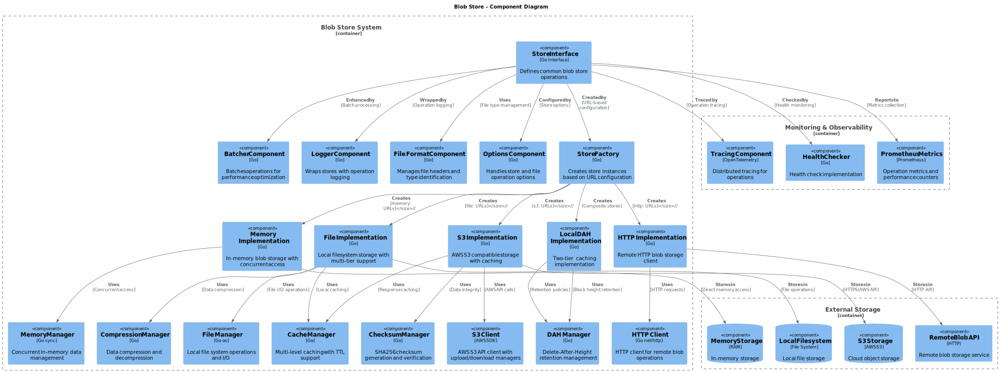
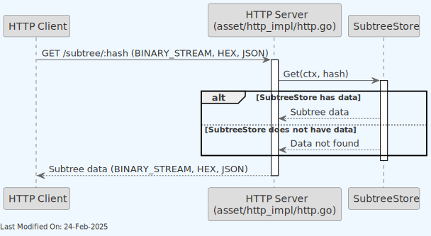
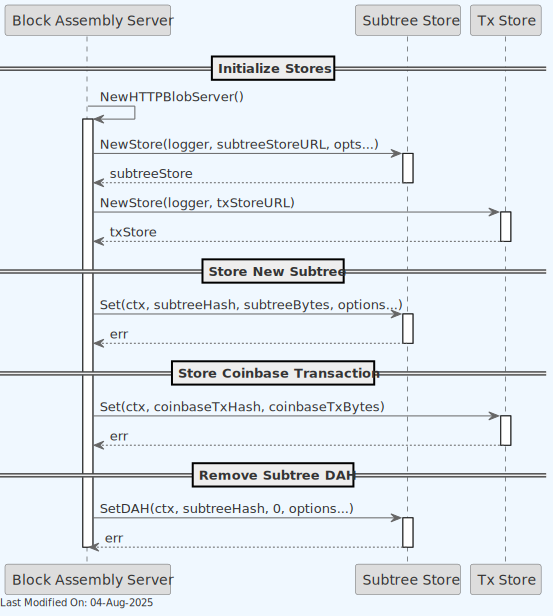
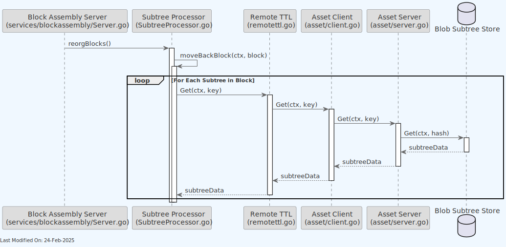
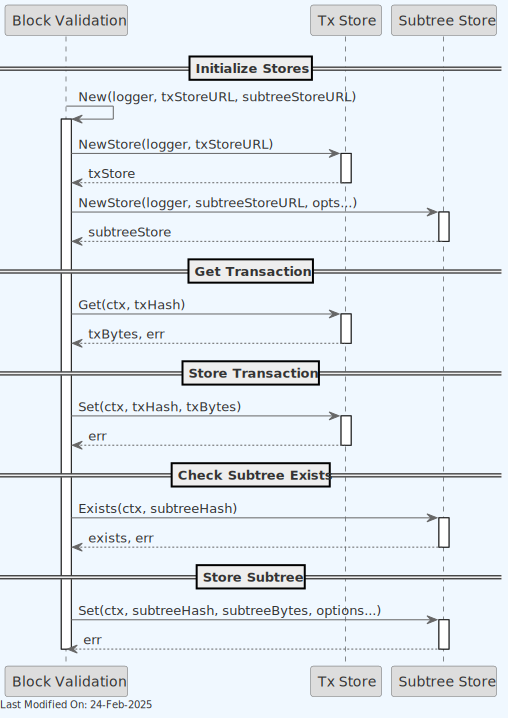
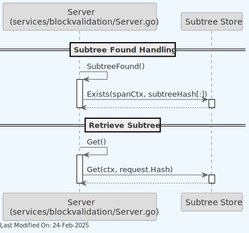
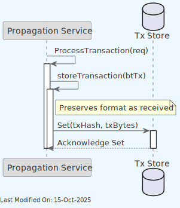

Blob Server
Index
- 1. Description
- 2. Architecture
- 3. Technology
- 4. Data Model
- 5. Use Cases
- 6. Directory Structure and Main Files
- 7. Locally Running the store
- 8. Configuration Options
- 9. Other Resources
1. Description
The Blob Server is a generic datastore that can be used for any specific data model. In the current Teranode implementation, it is used to store transactions (extended tx) and subtrees.
The Blob Server provides a set of methods to interact with the TX and Subtree storage implementations.
-
Health:
Health(ctx)- Purpose: Checks the health status of the Blob Server.
-
Exists:
Exists(ctx, key)- Purpose: Determines if a given key exists in the store.
-
Get:
Get(ctx, key)- Purpose: Retrieves the value associated with a given key.
-
GetIoReader:
GetIoReader(ctx, key)- Purpose: Retrieves an
io.ReadCloserfor the value associated with a given key, useful for streaming large data.
- Purpose: Retrieves an
-
Set:
Set(ctx, key, value, opts...)- Purpose: Sets a key-value pair in the store.
-
SetFromReader:
SetFromReader(ctx, key, value, opts...)- Purpose: Sets a key-value pair in the store from an
io.ReadCloser, useful for streaming large data.
- Purpose: Sets a key-value pair in the store from an
-
SetTTL:
SetTTL(ctx, key, ttl)- Purpose: Sets a Time-To-Live for a given key.
-
Del:
Del(ctx, key)- Purpose: Deletes a key and its associated value from the store.
-
Close:
Close(ctx)- Purpose: Closes the Blob Server connection or any associated resources.
2. Architecture
The Blob Server is a store interface, with implementations for Tx Store and Subtree Store.

The Blob Server implementations for Tx Store and Subtree Store are injected into the various services that require them. They are initialised in the daemon/daemon_stores.go file and passed into the services as a dependency. See below:
func getTxStore(logger ulogger.Logger) blob.Store {
if txStore != nil {
return txStore
}
txStoreUrl, err, found := gocore.Config().GetURL("txstore")
if err != nil {
panic(err)
}
if !found {
panic("txstore config not found")
}
txStore, err = blob.NewStore(logger, txStoreUrl, options.WithHashPrefix(10))
if err != nil {
panic(err)
}
return txStore
}
func getSubtreeStore(logger ulogger.Logger) blob.Store {
if subtreeStore != nil {
return subtreeStore
}
subtreeStoreUrl, err, found := gocore.Config().GetURL("subtreestore")
if err != nil {
panic(err)
}
if !found {
panic("subtreestore config not found")
}
subtreeStore, err = blob.NewStore(logger, subtreeStoreUrl, options.WithHashPrefix(10))
if err != nil {
panic(err)
}
return subtreeStore
}
The following diagram provides a deeper level of detail into the Blob Store's internal components and their interactions:

3. Technology
3.1 Overview
Key technologies involved:
-
Go Programming Language (Golang):
- A statically typed, compiled language known for its simplicity and efficiency, especially in concurrent operations and networked services.
- The primary language used for implementing the service's logic.
3.2 Store Options
The Blob Server supports various backends, each suited to different storage requirements and environments.
-
Batcher: Provides batch processing capabilities for storage operations.
-
File: Utilizes the local file system for storage.
-
HTTP: Implements an HTTP client for interacting with a remote blob storage server.
-
Local TTL: Provides local Time-to-Live (TTL) functionality for managing data expiration.
-
Memory: In-memory storage for temporary and fast data access.
-
Null: A no-operation store for testing or disabling storage features.
-
Amazon S3: Integration with Amazon Simple Storage Service (S3) for cloud storage. Amazon S3
Each store option is implemented in its respective subdirectory within the stores/blob/ directory.
The system also includes a main server implementation (server.go) that provides an HTTP interface for blob storage operations.
Options for configuring these stores are managed through the options package.
3.3 Concurrent Access Patterns
The Blob Server includes a ConcurrentBlob implementation that provides thread-safe access to blob storage operations with optimized concurrent access patterns. This feature is particularly important in high-concurrency environments where the same blob might be requested multiple times simultaneously.
Key Features
- Double-Checked Locking Pattern: Ensures that only one fetch operation occurs at a time for each unique key, while allowing concurrent operations on different keys
- Generic Type Support: Parametrized by a key type K that must satisfy
chainhash.Hashconstraints for type-safe handling - Duplicate Operation Prevention: Avoids duplicate network or disk operations when multiple goroutines request the same blob simultaneously
- Efficient Resource Usage: Other goroutines wait for completion rather than duplicating work
Usage Pattern
// Create a concurrent blob instance
concurrentBlob := blob.NewConcurrentBlob[chainhash.Hash](blobStore, options...)
// Get a blob with automatic fetching if not present
reader, err := concurrentBlob.Get(ctx, key, fileType, func() (io.ReadCloser, error) {
// This function is called only if the blob doesn't exist
return fetchBlobFromSource(key)
})
The ConcurrentBlob wrapper is particularly useful for services that need to fetch the same data concurrently, such as block validation or transaction processing services.
3.4 HTTP REST API Server
The Blob Server includes a comprehensive HTTP REST API server implementation (HTTPBlobServer) that provides full HTTP access to blob storage operations. This server implements the standard http.Handler interface and can be easily integrated into existing HTTP server infrastructure.
Supported HTTP Endpoints
- GET /health: Health check endpoint returning server status
- GET /{key}: Retrieve blob by key with optional range support
- POST /{key}: Store new blob data
- PUT /{key}: Update existing blob data
- DELETE /{key}: Delete blob by key
- GET /{key}/dah: Get Delete-At-Height information for a blob
- POST /{key}/dah: Set Delete-At-Height for a blob
Usage Example
// Create HTTP blob server
httpServer := blob.NewHTTPBlobServer(blobStore, logger)
// Start HTTP server
http.Handle("/blob/", http.StripPrefix("/blob", httpServer))
log.Fatal(http.ListenAndServe(":8080", nil))
The HTTP server is particularly useful for external integrations, debugging, and providing web-based access to blob storage functionality.
4. Data Model
-
Subtree Data Model: Contain lists of transaction IDs and their Merkle root.
-
Extended Transaction Data Model: Include additional metadata to facilitate processing.
5. Use Cases
5.1. Asset Server (HTTP): Get Transactions

5.2. Asset Server (HTTP): Get Subtrees

5.3. Block Assembly
New Subtree and block mining scenarios:

Reorganizing subtrees:

5.4. Block Validation
Service:

gRPC endpoints:

5.5 Propagation: TXStore Set()

6. Directory Structure and Main Files
./stores/blob/
Interface.go # Interface definitions for the project.
batcher # Batching functionality for efficient processing.
batcher.go # Main batcher functionality.
factory.go # Factory methods for creating instances.
file # File system based implementations.
file.go # File system handling.
file_test.go # Test cases for file system functions.
http # HTTP client implementation for remote blob storage.
http.go # HTTP specific functionality.
localttl # Local Time-to-Live functionality.
localttl.go # Local TTL handling.
memory # In-memory implementation.
memory.go # In-memory data handling.
null # Null implementation (no-op).
null.go # Null pattern implementation.
options # Options and configurations.
Options.go # General options for the project.
Options_test.go # Test cases for options.
s3 # Amazon S3 cloud storage implementation.
s3.go # S3 specific functionality.
server.go # HTTP server implementation for blob storage.
server_test.go # Test cases for the server implementation.
7. Locally Running the store
The Blob Server cannot be run independently. It is instantiated as part of the main.go initialization and directly used by the services that require it.
8. Configuration Options
For comprehensive configuration documentation including all settings, defaults, and interactions, see the ublob Store Settings Reference.